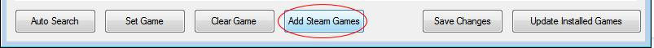
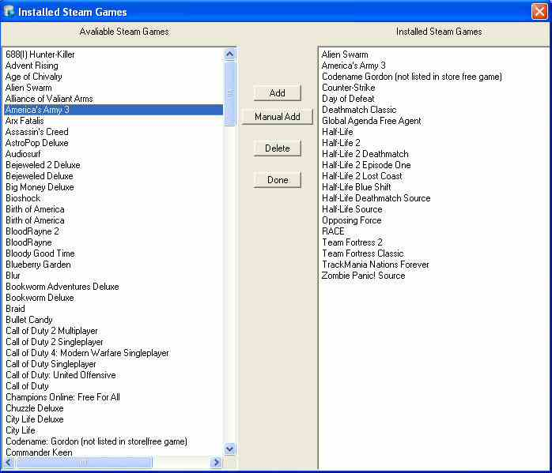
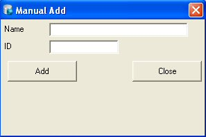
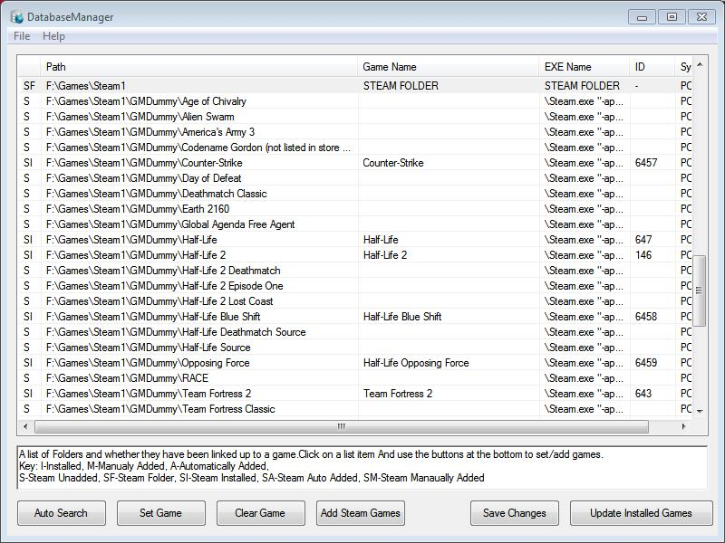

Steam Folder
Make sure that your steam folder is included in the sources. (It
will show as game name: STEAM FOLDER in main view)
Click on Add
Steam Games

Steam Manager Window
After doing the previous step you will be presented with a window like below. (May take a minute or so to receive games from online list)

Select
your installed games from the left box and click Add.
If you add
the wrong game you can select it in the right box and click delete to
remove it.
Should your game not be on the list then click Manual
Add.

If you click Manual Add you will be presented with the above window. Give your game a name and the steam app id for that game. The ID can be found by following this guide: Here. Click Add and it will be added to the right box.
Downloading Info
When you have added your steam games, click done, the games now should have been added to the list and you can now add/edit them like any other game. (See Below)
